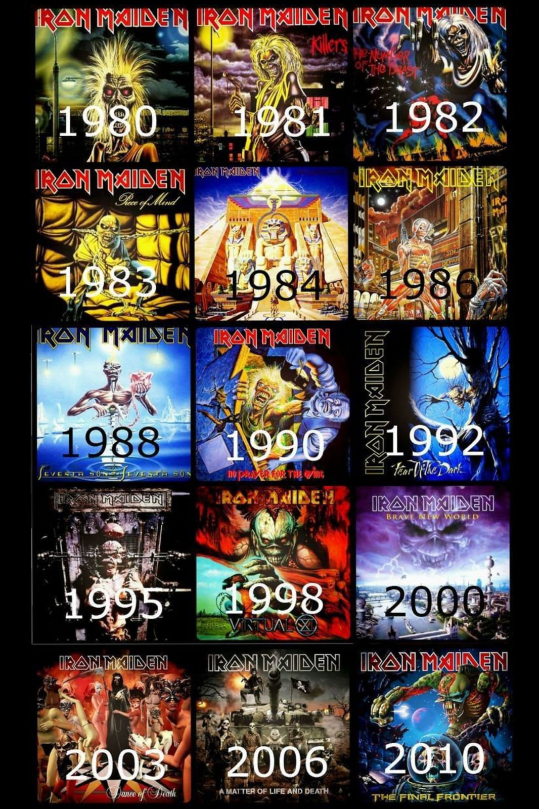

Iron Maiden Álbuns

- VIRTUAL XI (1998)
- THE FINAL FRONTIER (2010)
- NO PRAYER FOR THE DYING (1990)
- THE X FACTOR (1995)
- DANCE OF DEATH (2003)
- IRON MAIDEN (1980)
- THE BOOK OF SOULS (2015)
- A MATTER OF LIFE AND DEATH (2006)
- FEAR OF THE DARK (1992)
- KILLERS (1981)
- BRAVE NEW WORLD (2000)
- PIECE OF MIND (1983)
- SOMEWHERE IN TIME (1986)
- THE NUMBER OF THE BEAST (1982)
- POWERSLAVE (1984)
- SEVENTH SON OF A SEVENTH SON (1988)